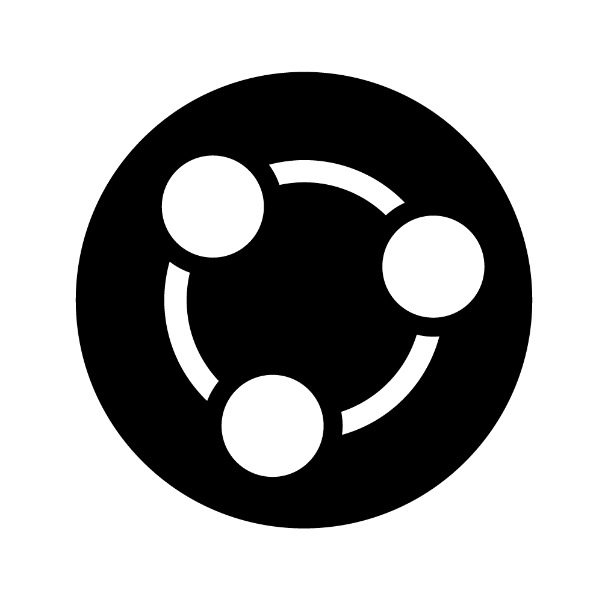
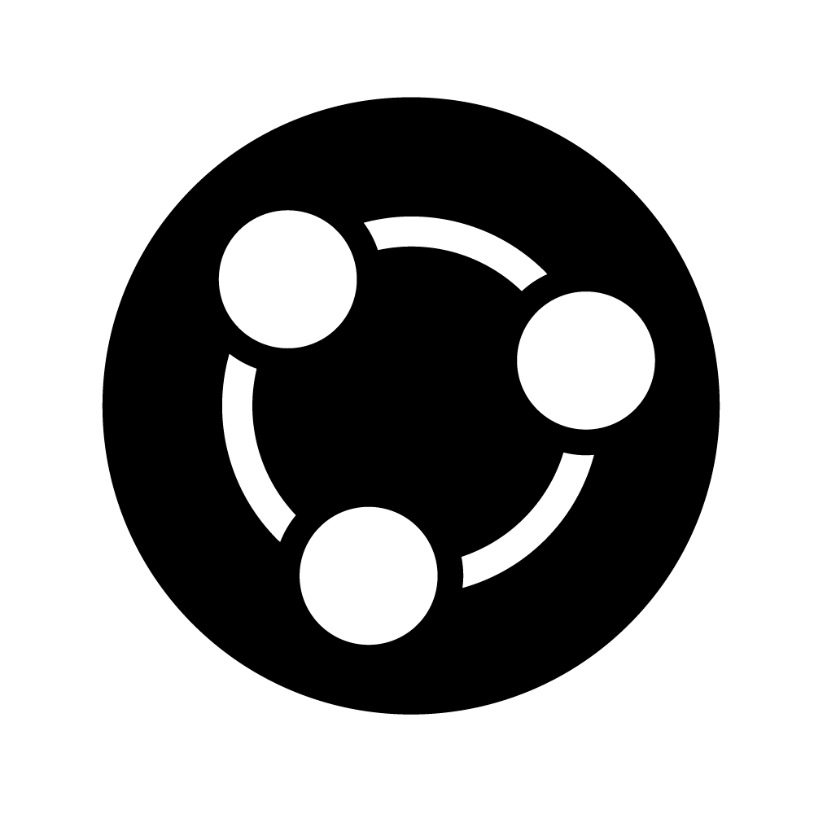

Algemene cursusinformatie
Alle praktische informatie over de cursus verzamelen we hier. Als je vragen hebt, stel die dan vooral, liefst tijdens de hoor- of werkcolleges, of in Teams in de channel ‘Praktische vragen’ zodat anderen er ook van kunnen profiteren. Je kunt de docenten ook bereiken via het e-mailadres kwantitatieve.biologie@uu.nl.
Docenten
Cursuscoördinator
dr. Bram van Dijk, b.vandijk@uu.nl
Onderzoeksgroep Theoretische Biologie
H.R. Kruytgebouw, Padualaan 8, kamer N605
Eerstejaarscoördinator
Christa Eekhuis MSc., c.a.eekhuis@uu.nl (organisatie, blackboard en niet-inhoudelijke vragen)
Docenten
- dr. Bram van Dijk, b.vandijk@uu.nl
Basisprincipes van R, Basiswiskunde, en Biologische Modellen - dr. Rutger Hermsen, r.hermsen@uu.nl
Statistiek
Cursusonderdelen
De cursus bestaat uit vier onderdelen:
- Basisprincipes van R (twee lesdagen): Gedurende de cursus leer je programmeren met ‘R’. Je leert hoe je R kan gebruiken om berekeningen uit te voeren, grafieken te plotten, data te analyseren, en daar statistiek op toe te passen. Omdat je met R een enorme reeks statistische procedures kan uitvoeren, is het uitgegroeid tot een standaard binnen de biologie. Tijdens de eerste week leer je alleen de basiskennis, en gedurende de cursus kom je in aanraking met concrete voorbeelden van hoe je R kunt gebruiken voor biologisch onderzoek. Later kom je R bovendien weer tegen in vele andere cursussen binnen de opleiding.
- Basiswiskunde (twee lesdagen): Iedere bioloog heeft wiskunde nodig. Tijdens het eerste deel van de cursus frissen we deze basiskennis op. Net als bij het onderdeel ‘R’, bouwen we in kleine stapjes door op de kennis die je in deze week opdoet.
- Biologische Modellen (vier weken): Dit deel van de cursus gaat over het modelleren van biologische systemen. Je leert waarom biologie modellen nodig heeft, wat een model is, en hoe je met simpele wiskunde of computersimulaties inzicht kan krijgen in biologische processen. Tijdens dit onderdeel van de cursus voer je in een groepje een kort project uit, en schrijf je hierover een kort verslag.
- Statistiek (vier weken): In dit onderdeel leer je methoden en technieken voor het verzamelen, bewerken, interpreteren, en presenteren van gegevens.
Leerdoelen
Basisprincipes van R:
- Voorbeelden van verschillende variabelen in R benoemen
- Voorbeelden van verschillende datastructuren in R benoemen
- R-scripts kunnen lezen en de uitkomst interpreteren
- Zelf scripts schrijven om eenvoudige berekeningen uit te voeren
Basiswiskunde:
- Vergelijkingen oplossen (algebra)
- Rekenen met breuken
- Rekenen met exponenten en logaritmen
- Afgeleiden bepalen van eenvoudige functies
- Asymptoten en limieten bepalen
- Functies schetsen
Biologische modellen:
- Uitleggen waarom modellen essentieel zijn binnen de biologie
- Voorbeelden geven van verschillende typen modellen
- Aannames benoemen die bij een bepaald model komen kijken
- Biologische vraagstukken koppelen aan een geschikt type model
- Wiskundige modellen van biologische systemen lezen, begrijpen, en interpreteren in termen van biologische inzichten
- Uitleggen hoe een verandering van parameters kan leiden tot fundamenteel ander gedrag van een systeem
- Uitleggen wat emergente eigenschappen zijn, en voorbeelden geven van modellen met emergente eigenschappen
Statistiek:
- Aan het onderdeel Statistiek wordt momenteel nog gewerkt. De leerdoelen kun je binnenkort hier zien.
Vaardigheden
Je werkt in deze cursus aan de volgende vaardigheden:
- Creatief, kritisch, en probleemoplossend denken en werken
- Programmeren met R in de programmeeromgeving Rstudio
- Data analyseren en beschrijven
- Samenwerken aan een kort (theoretisch) onderzoeksproject
- Inzichten uit een model kort en bondig omschrijven in een verslag

 
 
Symbolen voor (van links naar rechts) de vaardigheden “kritisch denken”, “omgaan met data”, “samenwerken” en “schrijven” zoals vastgesteld door de Bachelor opleiding Biologie aan de Universiteit Utrecht.
De belangrijkste tip
Het is van groot belang dat je dit vak vanaf het begin bijhoudt. De eerste twee weken zijn zo voorbij, en dan is al de eerste deeltoets. Daarna bouwen we voort op deze kennis in ‘Biologische Modellen’, en is er geen tijd voor een inhaalslag! Ieder hoorcollege bouwt voort op het vorige, dus als je deze niet bijhoudt is het al snel lastig te volgen. Het is onze ervaring dat studenten die de stof goed bijhouden deze cursus goed af kunnen ronden, zelfs als de stof door hen als pittig wordt ervaren.
Mocht je problemen ondervinden, neem dan vooral contact op met Christa en/of de studieadviseurs.
Toetsing
Zoals bovengenoemd bestaat deze cursus uit vier onderdelen (zie Cursusonderdelen). De beoordeling is verdeeld over drie toetsen en een verslag:
| Evaluatie | Beschrijving | Weging |
|---|---|---|
| Deeltoets I | Basisprincipes van R en Basiswiskunde | 20% |
| Deeltoets II | Biologische Modellen | 35% |
| Verslag | Mini-project tijdens ‘Biologische Modellen’ | 10% |
| Deeltoets III | Statistiek | 35% |
Voor de drie deeltoetsen moet minimaal een 5 gehaald worden. Om een eindcijfer te krijgen moet het verslag ingeleverd zijn, en mag niet meer dan 25% van de werkcolleges zijn gemist. Het eindcijfer moet minimaal een 5,5 zijn. Voor studenten die hier niet aan voldoen wordt in één zitting een herkansingsmoment aangeboden. Tijdens dit herkansingsmoment kunnen alle deeltoetsen waarvan het cijfer lager is dan een 5,5 worden herkanst. Het verslag kan niet worden herkanst. Van de onderdelen die niet herkanst hoeven of kunnen worden blijft het cijfer staan.
In lijn met de OER mag er alleen worden herkanst als het eindcijfer tussen de 4,0 en 5,5 is. Cijfers worden ten allen tijden op 1 decimaal afgerond.
Werkvormen
Iedere week zijn er meerdere fysieke hoorcolleges. Hoorcolleges worden zoveel mogelijk opgenomen, maar technische storing zijn altijd mogelijk. Als je zeker wil weten dat je niets mist, kun je het best ervoor zorgen dat je er bent!
Werkcolleges vinden plaats na de hoorcolleges. Tijdens deze werkcolleges werk je met de computer en met pen en papier om te oefenen met de stof. De werkcolleges gaan over de stof van het hoorcollege; we gaan ervan uit dat je de hoorcolleges hebt bijgewoond.
Tijdens het onderdeel ‘Biologische Modellen’ voer je in groepen van 3 of 4 studenten een mini-project uit met behulp van het Rscript Grind.R en een online computer-simulatie. Over dit mini-project schrijf je gezamelijk een kort verslag. De werkcolleges tijdens deze week hebben doelbewust minder vragen, zodat je ook tijdens deze werkcolleges met je studiegenoten aan het mini-project en het verslag kan werken, en hulp van assistenten kan vragen. Aan het eind van week 5 lever je dit verslag via Blackboard in.
Tot slot is er een aanzienelijk deel zelfstudie. De hoor- en werkcolleges nemen samen steeds een dagdeel in beslag, wat betekent dat je dinsdag- en donderdag middag zelf in kan richten. Dat wil niet zeggen dat je deze middagen helemaal vol hoeft te plannen (af en toe willen we ook wat “rust en ruimte”), maar probeer deze tijd te gebruiken om bij te blijven met de stof! Als je dit niet doet, moet je wellicht vlak voor de toets veel te hard werken, en dat is zeker niet nodig.
Je vindt hier een studieplanning.
Groepsindeling
De deelnemers aan deze cursus zijn onderverdeeld in groepen. In MyTimetable zie je in welke groep jij bent ingedeeld en wanneer en waar jouw werkcolleges plaatsvinden.
Teams
Voor Kwantitatieve Biologie is een team aangemaakt in Microsoft Teams. Je kunt je als volgt aanmelden:
Open MS. Teams
Kies in het menu aan de linkerkant het icoon “Teams”
Klik linksonder op het scherm (of, afhankelijk van de versie van Teams, rechtsboven), op de knop “Join or create a team”
Zoek de tegel met de tekst “Join a team with a code”
Vul in dit veld de volgende code in: wv540vy
Kies “Join team”
Teams wordt niet gebruikt om de hoorcolleges te live-streamen. Als je echter vragen hebt aan de docenten, student-assistenten, of aan je mede-studenten, dan is het zeer nuttig om dit op Teams (kanaal Praktische vragen) te delen, zodat iedereen ervan kan profiteren.
Blackboard
Naast Microsoft Teams maken we gebruik van Blackboard. Bestanden, (deel)cijfers, en aankondigen, worden via Blackboard gedeeld.
Studiematerialen
Tijdens de cursus gebruiken we alleen de inhoud van dit (online) cursusboek, wat is voortgekomen met ondersteuning van het faculatir Utrechts Stimuleringsfonds Onderwijs (fUSO, 2e call 2024). Dankzij dit nieuwe cursusboek kunnen we meer interactief materiaal gebruiken en eenvoudiger R-code met jullie delen. Ook is het mogelijk dit boek printer-vriendelijk af te drukken voor eigen gebruik, of op te slaan als PDF.
Hoewel het interactieve boek heel handig is, raden we alsnog sterk aan om altijd pen en papier bij de hand te hebben bij deze cursus. Het is namelijk onze ervaring dat, als studenten meeschrijven en overzichten van het materiaal schetsen voor henzelf, dit hun cijfer zeker ten goede komt. Bovendien mag je naar iedere toets één volgeschreven A4tje meenemen (voor en achterkant, maar niet geprint!). Als je dus goed meedoet, kun je alvast nadenken wat je op je eigen spiekbriefje gaat zetten ;)
Aanwezigheidsplicht
De docenten uit het eerste jaar Biologie weten uit ervaring dat het bijwonen van werkcolleges essentieel is om de vakken te halen. Deze cursus is geen uitzondering: het volgen van de werkcolleges is onontbeerlijk voor voldoende begrip van de stof. Daarom is er een aanwezigheidsplicht voor de werkcolleges.
We begrijpen tegelijkertijd dat er situaties zijn waardoor je een werkcollege moet missen (ziekte of andere overmacht). Conform de afgesproken norm voor de eerstejaars Biologie vakken, mag je (indien afgemeld) 25% van de werkcolleges missen, wat met de huidige studieplanning neerkomt op hoogstens 7 werkcolleges. Je moet je dan wel even afmelden via dit formulier. Er is voor het missen van een enkel werkcollege geen vervangende opdracht: het is veel belangrijker dat je de stof zo snel mogelijk inhaalt!
Als je meer dan 25% van de werkcolleges mist, krijg je voor dit vak geen cijfer, en zul je het volledige vak volgend jaar opnieuw moeten volgen. Als je gedurende de cursus merkt dat je om een goede reden wellicht teveel werkcolleges gaat missen, neem dan contact op met de studieadviseurs. Alleen met advies van de studieadviseurs kunnen wij een uitzondering voor je maken!
Feedback en evalutatie
De docenten en student-assistenten doen natuurlijk hun uiterste best om een uitstekende cursus voor je te verzorgen. Heb je toch opmerkingen, aanmerkingen, kritiek of suggesties, dan horen we die heel graag. Als iedereen een kritische maar constructieve houding aanneemt, dan kunnen we de cursus jaar op jaar in goede sfeer verbeteren. Daarom stellen we het zeer op prijs als je na afloop van de cursus de Caracal-enquête invult.